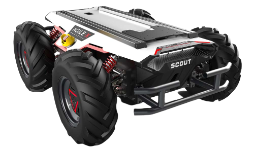

1.0 Importing a Model: AgileX Scout 2.0 & CAD-to-URDF Pipeline
1.1 Why AgileX Scout 2.0?
Developing an autonomous navigation stack requires a verified kinematic and dynamic platform before custom chassis machining and PCB assembly are complete. The commercial AgileX Scout 2.0 4WD mobile robot was selected as the digital twin proxy because it closely replicates the target physical Hunter across core parameters:
- Kinematic Steering: 4WD skid-steer differential drive actuation sharing identical velocity mapping matrices.
- Payload Class & Mass: $65.0\text{ kg}$ total vehicle mass with a low center of gravity (CoG) matching the heavy battery and vacuum payload.
- Electrical Drivetrain: Independent 48V brushless hub motors with high-torque reduction gearboxes ($r_{\text{wheel}} = 0.165\text{ m}$).

In 4WD skid-steer and differential drive platforms, turning requires tires to slip laterally against the ground. The ratio of wheelbase $L$ (front-to-rear axle distance) to trackwidth $B$ (left-to-right wheel separation) is a critical governing parameter:
If $\frac{L}{B} > 1.0$ (a long and narrow chassis), the resistive lateral scrubbing moment dominates over the tractive steering leverage of the tires, causing excessive wheel scrub, extreme motor current draw, violent shaking, and potential motor stall during turns. Maintaining a ratio of $\frac{L}{B} < 1.0$ (ideally between $0.7$ and $0.9$) provides sufficient trackwidth leverage to overcome tire-road scrubbing friction, ensuring responsive and agile yaw rotation without exceeding motor current ceilings.
1.2 Steps Taken in Model Importation
The model ingestion pipeline transitioned from mechanical CAD design to live ROS 2 simulation across three distinct engineering steps:
SolidWorks CAD to URDF
The Unified Robot Description Format (URDF) is an XML schema defining the kinematic and dynamic properties of the robot:
- Visual vs. Collision Meshes: High-polygon STLs are assigned to visual tags for photorealistic rendering, while collision meshes are simplified to lightweight bounding boxes and cylinders. Simplified collision shapes eliminate solver computational bottlenecks, ensuring a 1000 Hz physics stepping rate.
- Mass & 3D Inertia Tensors: Masses, centers of mass, and 3D inertia matrices ($I_{xx}, I_{yy}, I_{zz}$) were calculated directly from CAD material assignments to ensure realistic momentum, braking distance, and roll/pitch dynamics.
URDF to ROS 2 & Gazebo
The URDF is parameterized into modular XACRO files and extended with Gazebo simulation plugins:
- DiffDrive Plugin: Configured
gz-sim-diff-drive-systemto command wheel joints from/cmd_veland calculate simulated wheel odometry. - Parameterization: Modular macros allow adjusting wheel track width ($0.582\text{ m}$), wheel radius ($0.165\text{ m}$), and sensor mount offsets.
- ROS 2 Launch Integration: Automated launch via
robot_state_publisherpublishing joint states and spawning the entity usingros_gz_sim.
TF Transform Tree Implementation
The tf2 coordinate hierarchy establishes real-time spatial transformations between all links:
- Tree Hierarchy:
map→odom→base_footprint→base_link→ sensor frames (laser_link,imu_link,gps_link,camera_link) and wheel joints. - Spatial Synchronization: When the LiDAR detects an obstacle 2 meters ahead in
laser_link, the TF tree instantly projects those range points intobase_linkand the globalmap, allowing Nav2 costmaps to inflate obstacles accurately.
2.0 Simulating Real-World Constraints & Physics Dynamics
Simulation fidelity depends entirely on modeling contact forces, ground surface friction, and vehicle rolling resistance. The simulation uses Gazebo Harmonic (gz-sim 8.x) with the DART/ODE physics backend configured at a $1000\text{ Hz}$ update frequency ($\Delta t_{\text{step}} = 1.0\text{ ms}$).
Pneumatic tires undergo continuous viscoelastic deformation at the tarmac contact patch, creating a resistive rolling force $F_{rr} = c_{rr} M g$. Modeling this parameter ensures the vehicle decelerates realistically upon releasing throttle rather than coasting frictionlessly.
Ground contact parameters were tuned to Coulomb static friction $\mu_s = 0.85$, dynamic friction $\mu_k = 0.75$, and restitution coefficient $e = 0.05$, matching empirical measurements of dry aerodrome asphalt and smooth concrete campus walkways.
When a 4WD rover turns in place, all four wheels are forced to drag sideways against the tarmac, generating a severe resistive yaw moment that must be overcome by the motors.
Mathematical Proof: Total Vehicle Yaw Scrubbing Moment ($M_{z,\text{scrub}}$)
For vehicle mass $M = 65.0\text{ kg}$, tarmac friction $\mu = 0.80$, gravity $g = 9.81\text{ m/s}^2$, and wheelbase $L = 0.50\text{ m}$:
Overcoming this resistive moment requires a static breakaway torque of $\tau_{\text{skid}} \approx 19.73\text{ N}\cdot\text{m}$ per motor shaft. For hub motor torque constant $K_t \approx 1.057\text{ N}\cdot\text{m/A}$, executing an in-place turn from a dead stop would draw $74.64\text{ A}$ across the 48V bus, exceeding the $70.0\text{ A}$ BMS safety cutoff. This physics validation demonstrates that zero-radius pivot turns must be prevented through continuous smooth-curvature trajectory planning, eliminating tire scrubbing and protecting motor windings from thermal overload.
3.0 Sensors: Purpose, Perception & Synthetic Simulation
The digital twin generates synthetic sensor streams matching physical sensor rates, message schemas, and noise profiles, routed seamlessly into ROS 2 Jazzy through ros_gz_bridge:
/scan)
Purpose: Dynamic obstacle detection (foreign object debris, birds, service carts, pedestrians) and local costmap inflation for proactive collision avoidance.
Simulation: Modeled as a Hokuyo UST-20LX equivalent with $360^\circ$ planar coverage, $1080$ ray beams ($0.33^\circ$ angular resolution), $25.0\text{ m}$ range, and zero-mean Gaussian noise ($\sigma = 0.01\text{ m}$) at $20\text{ Hz}$.
/imu/data)
Purpose: Measures 9-DOF orientation, high-frequency ($100-200\text{ Hz}$) angular yaw rates, and linear accelerations, bridging latency gaps between lower-frequency GPS updates.
Simulation: Gazebo IMU plugin with calibrated angular random walk, gyro bias drift, and accelerometer white noise modeling chassis vibration over pavement joints.
/gps/fix)
Purpose: Provides centimeter-level absolute global coordinates ($x, y, z$, lat/lon) in WGS84, delivering drift-free localization across expansive runways where LiDAR SLAM fails.
Simulation: Gazebo NavSat plugin configured with georeferenced origin matching NUS EA Field coordinates ($1.3000^\circ\text{N}, 103.7712^\circ\text{E}$).
/camera/image_raw)
Purpose: Operator visual stream and optical confirmation of runway debris feeding edge AI (YOLO) detection models.
Simulation: GPU camera shader delivering $1280 \times 720$ resolution at $30\text{ FPS}$ with a $90^\circ$ horizontal field of view (HFOV).
Localization fuses disparate sensor rates via a two-stage Extended Kalman Filter:
• Local EKF (odom frame): Fuses high-rate wheel odometry ($50\text{ Hz}$) with IMU angular velocity ($100\text{ Hz}$) to produce a smooth, continuous, drift-minimizing pose estimate for local trajectory controllers.
• Global EKF (map frame): Fuses local odometry with absolute RTK-GNSS position fixes ($10\text{ Hz}$), eliminating cumulative wheel-slip drift and anchoring the robot within world coordinates.
4.0 Controller: Navigation Planning & Motion Execution
The simulation environment provides the physics world, vehicle chassis proxy, and synthetic sensor feeds; however, the autonomous path planning, trajectory optimization, and velocity control algorithms reside within the Navigation Subsystem:
🧭 Autonomous Navigation & Trajectory Tracking Architecture
The digital twin validates three primary navigation algorithms running under the ROS 2 Jazzy Nav2 stack:
Enforces continuous-curvature trajectory primitives, ensuring planned paths avoid high-current zero-radius pivot scrub on high-friction tarmac.
Dynamically scales linear velocity based on path curvature ($\kappa$) and proximity to obstacles, preventing high-speed cornering roll and wheel slip.
Enforces dual-zone protection polygons ($3.5\text{ m}$ proactive slowdown, $0.8\text{ m}$ emergency stop), arresting motion within $2.715\text{ m}$ from $10\text{ km/h}$.
5.0 Evaluation: Quantitative Benchmarking & Sim-to-Real Challenges
Simulation → Real World
Progression from Semester 1 Software-in-the-Loop Foundation to Semester 2 Physical Hardware Deployment
- Train and test safely
- Faster iterations
- Randomize different environments
- Realistic physics and constraints
- Test in real environments
- Fine-tune parameters
- Handle unmodeled effects
- Ensure safety
- Monitor performance
- Continuous learning
- Update models
- Scale to new scenarios
5.1 Real-World Challenges Anticipated in Semester 2 Physical Deployment
While the Phase 1 digital twin demonstrated $RTF = 0.98 \pm 0.02$ and verified trajectory stability in software, transitioning to physical hardware in Semester 2 introduces critical physical discrepancies (the "Sim-to-Real Gap"):
In Gazebo, wheel velocities update instantaneously. The physical ZLAC8015D BLDC hub motors communicate over a CANopen bus via STM32 firmware with 10–20 ms loop latency, non-linear torque-speed drop-off curves, and current limitations that require feedforward tuning.
Gazebo's uniform Coulomb friction ($\mu = 0.8$) does not capture real-world pavement variations such as wet tarmac patches, aircraft rubber touchdown streaks, loose gravel, or tire tread wear, inducing unpredictable lateral drift during high-speed braking sweeps.
The physical custom aluminum trailing-arm suspension transmits terrain vibrations into the IMU accelerometer and induces high-frequency pitch jitter on the 2D LiDAR plane, requiring Butterworth low-pass filtering.
Near airport hangars and campus building facades, satellite signal multipath can cause RTK fix dropouts. The Dual-EKF must implement covariance threshold gating to fall back smoothly onto wheel odometry and IMU integration.
Replacing virtual DDS local loopbacks with the physical Microhard P900 V2 900 MHz FHSS serial radio introduces packet jitter and bandwidth constraints (115200 bps) over 1+ km sweeps, requiring lightweight binary JSON serialization.
🛠️ Summary: Major Challenges Faced & Engineering Solutions
Simulating an autonomous Hunter in wide-area aerodrome and outdoor environments presented four core engineering challenges that do not occur in conventional indoor mobile robotics:
- Flat and expansive open space ($> 60\text{ m} \times 100\text{ m}$).
- Zero vertical reference walls or columns within LiDAR range ($25\text{ m}$).
- Longitudinal scan covariance diverges ($\Sigma_{xx} \to \infty$), causing 2D SLAM scan matching to slip and fail.
- Import calibrated high-resolution aerial orthophoto ($0.05\text{ m/pixel}$).
- Annotate static traversable lanes and geofenced non-traversable boundaries.
- Eliminates reliance on vertical laser scan structures for map generation.
- Custom chassis fabrication was ongoing in parallel with autonomy development.
- Simulation required a verified 4WD skid-steer model with full TF tree frames.
- Mass distribution and hub motor kinematics had to match the physical design.
- Selected AgileX Scout 2.0 as verified commercial mobile robot proxy.
- Matches $65.0\text{ kg}$ payload, $L/B = 0.855$ ratio, and 48V hub motor drive.
- Allowed full autonomy and C2 software stack to mature in Semester 1.
- Airfield runways span 3–4 km in length and 60 m in width.
- Dynamic occupancy grid SLAM mapping across this scale exhausts edge computer RAM.
- High-resolution grid updates cause CPU throttling and frame rate collapse.
- Generate pre-annotated static costmaps (free lanes = cost 0, grass verges = cost 254).
- Downsample grid cells to $5.0\text{ cm/pixel}$ balancing planning precision with low RAM.
- Allows Nav2 global planners to compute full-mission paths instantaneously.
- 4WD skid-steer wheel odometry inherently suffers cumulative lateral wheel slip.
- Turning on high-friction tarmac produces severe dead-reckoning drift.
- LiDAR scan matching is unavailable due to open aerodrome terrain geometry.
- Dual-EKF architecture fusing wheel odometry, 9-DOF IMU, and RTK-GNSS positioning.
- Local EKF maintains smooth $50\text{ Hz}$ control odometry in
odomframe. - Global EKF anchors pose to absolute WGS84 coordinates in
mapframe, eliminating drift.
6.0 Multi-Machine Command-and-Control (C2) Integration
The Software-in-the-Loop testbench bridges two independent physical computing platforms to replicate the real-world UAV-to-Hunter coordination datalink:
Static IP: 192.168.137.233. Executes Charan's UAV C2 alert program (DemoComs_C2.py) and Hilbert's standalone C2 Tactical GUI (uav_waypoint_commander.py). Formats and publishes asynchronous JSON target alerts on /c2/target_alert.
Static IP: 192.168.137.1. Runs Gazebo Harmonic physics simulation, Nav2 SmacPlanner, and Hilbert's ugv_c2_bridge_node.py, ingesting alerts and driving Hunter to intercept coordinates.
CycloneDDS Static Unicast Discovery Configuration (cyclonedds.xml)
Standard DDS multicast discovery is blocked by router IGMP snooping. To establish deterministic peer discovery, explicit unicast XML peering was configured:
<?xml version="1.0" encoding="UTF-8" ?>
<CycloneDDS xmlns="https://cdds.io/config">
<Domain id="any">
<General>
<NetworkInterface name="auto"/>
<AllowMulticast>false</AllowMulticast>
</General>
<Discovery>
<Peers>
<Peer address="192.168.137.1"/>
<Peer address="192.168.137.233"/>
</Peers>
<ParticipantIndex>auto</ParticipantIndex>
</Discovery>
</Domain>
</CycloneDDS>🎬 High-Fidelity Simulation Demonstrations
Interactive video captures confirming autonomous path execution, dynamic obstacle clearance, and trajectory tracking across the target NUS EA Field environment and reference airfield corridor:
📍 NUS EA Field Autonomous Navigation
Phase 1 TargetAgileX Scout 2.0 proxy rover navigating outdoor campus walkways, avoiding simulated dynamic obstacles, and executing waypoints cued through Nav2 on the aerial orthophoto map.
🛫 Aarhus Airport FOD Hunter (EKAH)
Reference ExplorationFull-scale asphalt corridor sweep, centerline tracking, and multi-obstacle avoidance simulation modeled after Aarhus Airport Runway 10R/28L ($2,702\text{ m} \times 45\text{ m}$).
📚 Hilbert's Centralized Reference Catalogue
All academic literature citations, peer-reviewed robotics research papers, and statutory aeronautical standards (FAA AC 150/5220-24, ASTM D5340-20, ICAO Doc 9718, IMDA TS SRD) supporting this simulation architecture are catalogued centrally with complete APA 7th edition bibliographic entries and direct DOI links.
Open Hilbert's Full Reference Catalogue →